Ayam Pegar Perak (Silver Pheasant)

Nama Latin : Lophura nycthemera
Jenis kelamin dapat dilihat dari warna bulu di tubuhnya. Jantan memiliki pola warna hitam dan putih, sedangkan betina berwarna coklat. Mempunyai kaki berwarna merah dan muka merah. Pejantan memiliki panjang total 120-125 cm dengan ekor mencapai 75 cm, sedangkan betina 70 cm.
Penyebaran Asia Tenggara
Habitat : Pegunungan dan daratan

Makanan : Pemakan serangga, buah, keong dan siput

Reproduksi : Bertelur